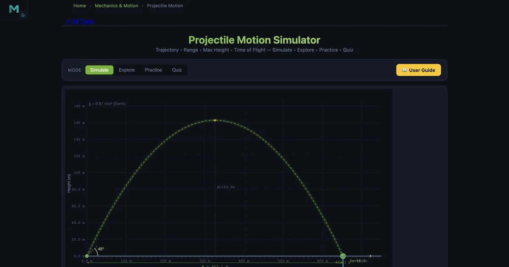
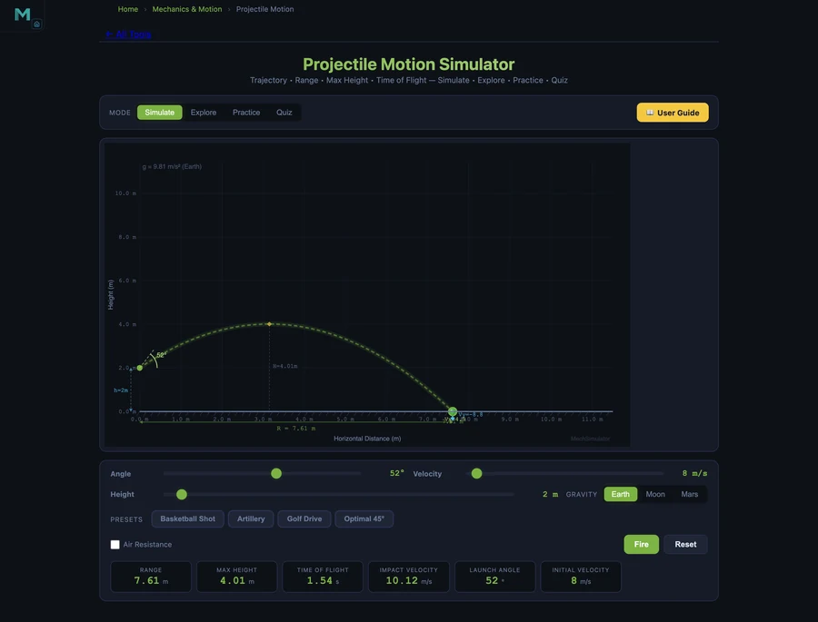

Projectile Motion Simulator — Range, Height & Time Calculator
Whether you are studying physics at secondary school, an engineering undergraduate, or a lecturer preparing demonstrations, this guide walks you through every formula that governs a flying object — then lets you verify them live in the Projectile Motion Simulator. We cover range, max height, time of flight, velocity decomposition, the effect of launch height, and real-world drag.

- Projectile motion is the curved, parabolic path of an object moving under gravity alone, with horizontal and vertical motions fully independent.
- For a ground-level launch, range R = v²·sin(2θ)/g, max height H = v²·sin²θ/(2g), and time of flight T = 2v·sinθ/g, where g = 9.81 m/s².
- Range is greatest at a 45° launch angle on flat ground; launch height extends range while air drag reduces it and pushes the optimal angle below 45° (typically 30–38°).
What Is Projectile Motion?
Projectile motion describes the curved path of any object that is launched into the air and then moves only under the influence of gravity (and possibly air resistance). Once the object leaves your hand — or the cannon, or the cliff — no engine or force acts horizontally. Gravity pulls it steadily downward, creating a parabolic arc.
The key insight, first stated clearly by Galileo, is that horizontal and vertical motions are completely independent. A bullet fired horizontally and one dropped from the same height hit the ground at exactly the same moment, because both experience the same gravitational acceleration in the vertical direction.
The Core Equations — Range, Height, Time
For a projectile launched from ground level with initial speed v at angle θ, the equations below follow directly from integrating Newton's second law:
Horizontal range
Maximum height
Time of flight
Parabolic trajectory
Notice that the range formula uses sin 2θ: this term is largest when 2θ = 90°, i.e. θ = 45°. Complementary angles like 30° and 60° give identical ranges because sin(60°) = sin(120°).
Worked Example: Artillery Shell at 45°
The simulator's Artillery preset fires at v = 80 m/s, θ = 45°, from ground level. Let us verify the readouts by hand:
- Range: R = 80² × sin(90°)/9.81 = 6400/9.81 = 652 m
- Max height: H = 6400 × sin²(45°)/(2 × 9.81) = 6400 × 0.5/19.62 = 163 m
- Time of flight: T = 2 × 80 × sin(45°)/9.81 = 160 × 0.707/9.81 = 11.5 s
- Impact speed: 80 m/s (equal to launch speed for ground-level launch, by energy conservation)
Load the Artillery preset in the simulator and confirm all four readouts match.
Velocity Decomposition and Independence of Motion
The initial velocity vector splits into two independent components:
The horizontal component Vx never changes (no horizontal force). The vertical component decreases by g every second:
At the highest point Vy = 0, so the speed there is simply Vx = v·cos θ. For our 80 m/s, 45° artillery shell that is 80 × cos(45°) = 56.6 m/s.
The simulator draws the velocity vector live at every time step — set a low launch speed such as 10 m/s so you can watch Vy shrink to zero at the apex and then grow downward.
Effect of Launch Height
When the launch height h > 0, the projectile has extra time to travel horizontally while falling to ground level. The range formula becomes:
The Basketball Shot preset (v = 8 m/s, θ = 52°, h = 2 m) captures a real shooting scenario. The horizontal component is Vx = 8 × cos(52°) = 4.93 m/s and the ball travels roughly 7.6 m before landing — close to the typical three-point-line distance when accounting for the basket height.

As launch height increases, the optimal angle (the one maximising range) decreases below 45°. This explains why football throw-ins from a height use a flatter angle than a field kick from ground level.
Air Resistance and Real-World Scenarios
Activate the Air Resistance toggle in the simulator to apply a quadratic drag model:
where Cd = 0.47 (sphere), ρ = 1.225 kg/m³ (air density), and A = π r² (cross-sectional area of a 5 cm radius ball). The drag force continuously removes energy and acts opposite to the velocity vector, so the descending arc becomes steeper than the ascending one — the parabola symmetry is broken. The optimal angle drops from 45° to roughly 30–38° depending on projectile and speed.
The Golf Drive preset (v = 70 m/s, θ = 12°) illustrates this perfectly: a low, flat angle is used precisely because backspin and drag interact to extend carry rather than height.
Using the Simulator — Four Preset Scenarios
Open the Projectile Motion Simulator and explore the four presets to build physical intuition quickly:
| Preset | v (m/s) | θ (°) | h (m) | Key lesson |
|---|---|---|---|---|
| Optimal 45° | 30 | 45 | 0 | Maximum range at ground level |
| Artillery | 80 | 45 | 0 | Scale of range with high speed |
| Basketball | 8 | 52 | 2 | Real trajectory with launch height |
| Golf Drive | 70 | 12 | 0 | Flat angle, drag-modified path |
After loading each preset, switch on Air Resistance and compare how the range and trajectory change. The simulator's ghost trails let you overlay multiple launches for direct comparison.
Key Takeaways
- The range formula \(R = v^2\sin 2\theta / g\) shows that 45° is optimal on flat ground.
- Complementary angles (e.g. 30° and 60°) give equal ranges but different heights.
- Launch height increases time of flight, extending range beyond the ground-level formula.
- At the peak, the speed equals the horizontal component \(v\cos\theta\); vertical speed is zero.
- Air drag reduces range, lowers max height, and breaks parabolic symmetry.
- The optimal launch angle with drag is less than 45° — typically 30–38° for most sports balls.
Frequently Asked Questions
What angle maximises the range of a projectile?
On flat ground with no air resistance, 45° maximises range because sin(2θ) reaches its maximum of 1 at θ = 45°. With drag or from a height, the optimal angle is below 45°.
What is the formula for range?
For a ground-level launch: R = v²·sin(2θ)/g. With launch height h: R = (v·cosθ/g)(v·sinθ + √(v²sin²θ + 2gh)).
How does launch height affect range?
Greater launch height means longer time of flight, so more horizontal distance is covered. The optimal angle also decreases below 45° as h increases.
Why does air resistance break the parabolic symmetry?
Quadratic drag (Fd = ½CdρAv²) continuously removes energy. The projectile moves slower on the way down, making the descending arc steeper than the ascending one.
What is the speed at the highest point?
At the apex, vertical velocity is zero. Only the horizontal component remains: speed = v·cosθ. For v = 80 m/s, θ = 45°, that is 80 × cos(45°) ≈ 56.6 m/s.